Equity Allocation
The information provided is for educational and informational purposes only and should not be considered financial or investment advice. Always consult with a qualified financial advisor or professional before making any investment decisions.
Equity allocation
- International diversification: national, developed, emerging, frontier
- Size: small, mid, large, mega cap
- Style: growth, blend, value
- That’s 4 × 4 × 3 = 48 combinations.
International diversification
International diversification
Most investors hold a portfolio that is heavily concentrated in their home market.
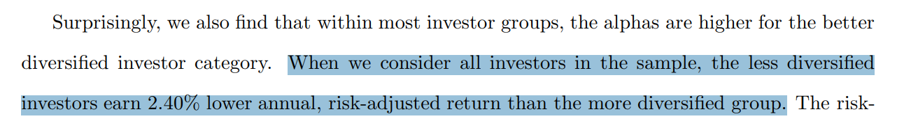
Home-country bias
Home-country bias is the persistent tendency to allocate a disproportionately large share of a portfolio to securities issued in one’s own country — far in excess of that country’s weight in the global market-cap universe.
- Over-exposure to domestic assets — investors routinely hold 60–90% of equity in local stocks even when their domestic market represents only a fraction of world market value.
- Driven by familiarity and perceived safety — local brands, accounting rules, currency and regulations all feel less risky.
- Leads to under-diversification — concentration raises portfolio volatility and the risk of country-specific downturns or “lost decades”.
Countries by stock-market capitalisation
The US dominates the global equity universe — but it doesn’t exhaust it.
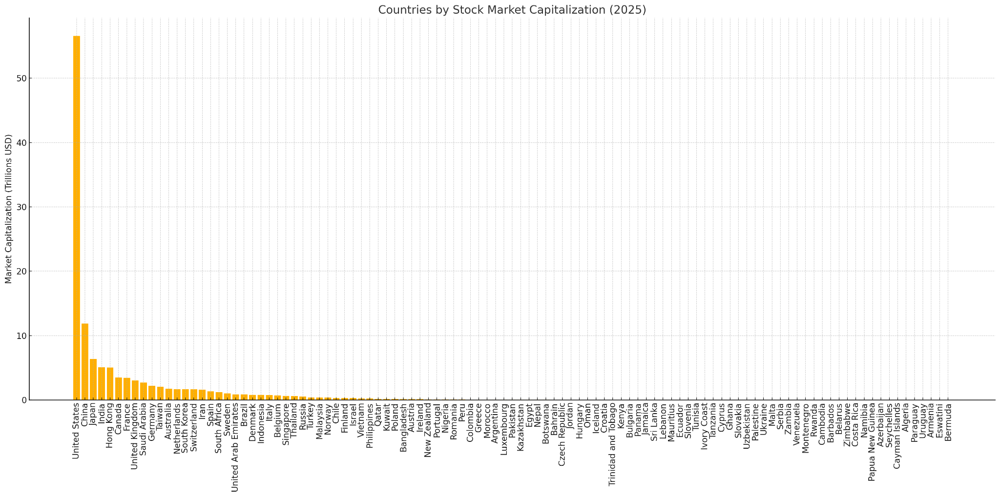
Categories
Developed, emerging, frontier — a coarse but useful taxonomy.
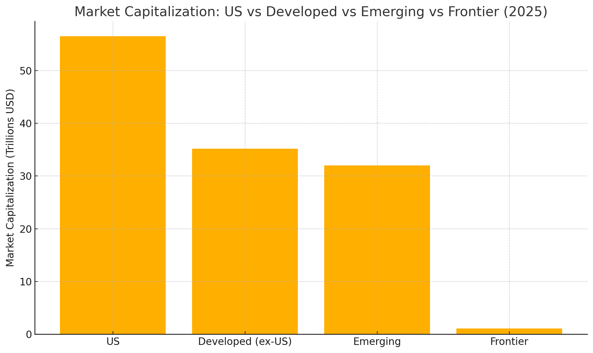
International diversification — benefits
Adding foreign equities, bonds, or real assets usually lowers portfolio volatility, broadens return drivers, and guards against “lost decades” in any one market — but it also introduces new layers of risk: currency moves, higher costs, unfamiliar regulations, and the possibility that political shocks (sanctions, capital controls, market closures) temporarily negate the benefit.
A sound policy: diversify enough to avoid a home-market accident, but not so far that incremental risks and frictions overwhelm the gain.
— Risks
US and international markets move in cycles
Multi-decade leadership rotates between US and ex-US equities.
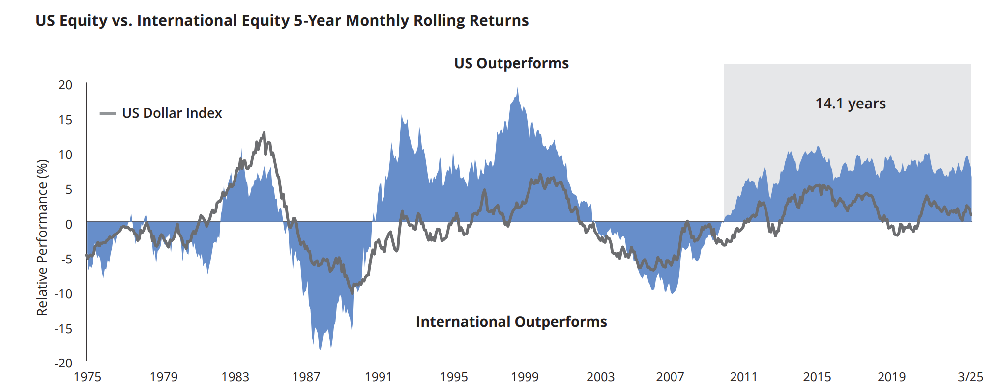
A reasonable target
- US: 60%
- Developed (ex-US): 40%
- Emerging: 0%
A starting point, not a recommendation — adjust to risk tolerance and tax situation.
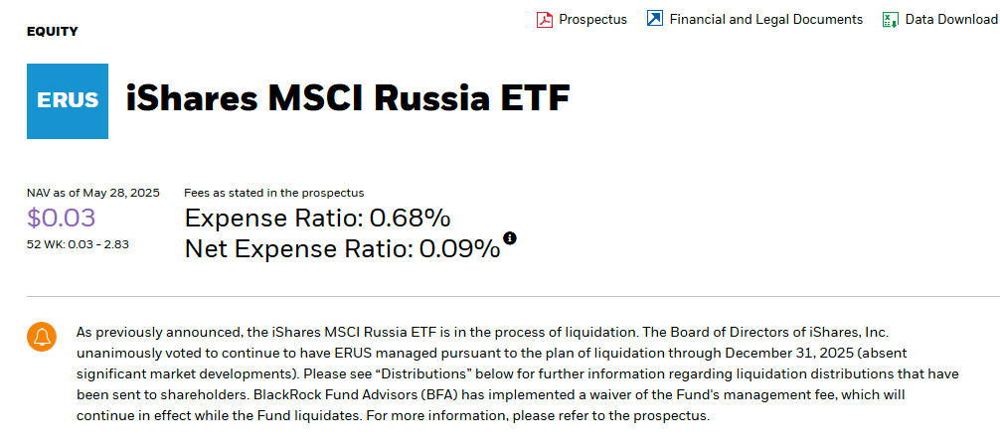
What happened?
Following the Russian invasion of Ukraine in February 2022, the iShares MSCI Russia Capped ETF (ERUS) was caught between sanctions and market closures. NYSE Arca halted trading on March 4, 2022.
- Impact on ERUS holders
- Trading halt & illiquidity: investors couldn’t buy or sell shares on the open market.
- Valuation challenges: Russian holdings became illiquid and difficult to value.
- Liquidation: BlackRock initiated a wind-down, but the inability to sell Russian securities left the fund in a state of suspension.
Size
Market-cap weighting
- The weight of each company in an index fund matches its weight in the market.
- You end up owning a lot of large-cap stocks, because they make up most of the market.
- There’s nothing wrong with capturing market returns through a market-cap-weighted index fund — it’s the default for good reasons.
Remember this?
Country weights in the global market-cap universe.
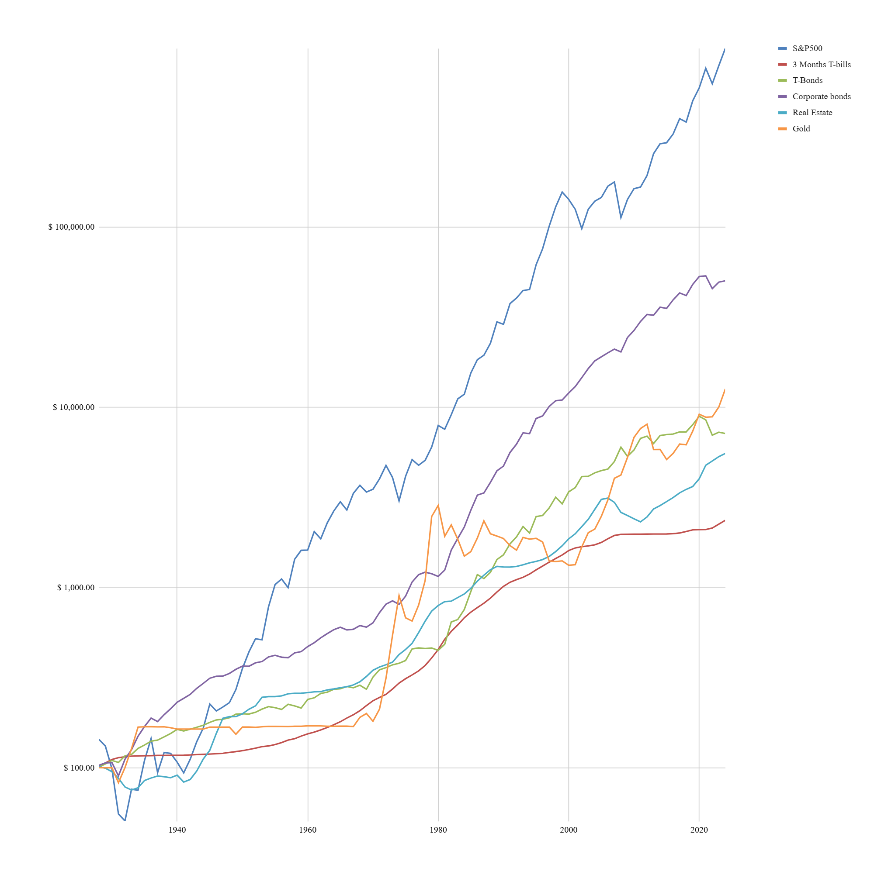
I lied…
Small cap
Country weights look quite different once small-caps are added.
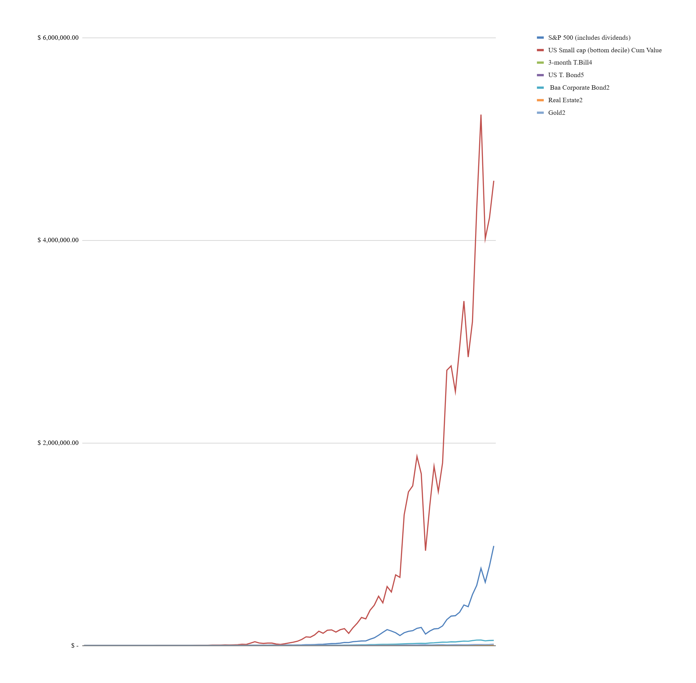
Return on investment (log scale)
Long-run growth of $1 — small-caps vs. the broad market.
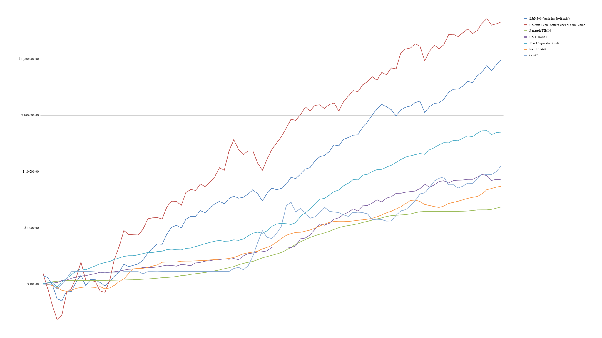
Small-cap and value stocks
There is evidence that certain types of stocks within the market should be expected to do even better over time. Two examples are small-cap and value stocks.
Risk factors
Risks and returns
- Higher risk generally implies higher expected return.
- A risk factor in asset pricing is a measurable characteristic — or return series — that captures exposure to a specific source of systematic risk for which investors expect to be compensated.
Two portfolios
- Portfolio A: 50% cash + 50% stocks
- Portfolio B: 100% stocks
- They have different returns. How can the difference be quantified?
Market beta
- Market beta is the stock-market risk factor.
- A beta of 1.0 means the portfolio moves in lock-step with the market; a beta of 0.5 means it moves half as much.
- If the market moves by x, the portfolio moves by x · β.
- So Portfolio A above (50% cash + 50% stocks) has β ≈ 0.5 — when the market moves +10%, it moves +5%.
Almost
Market beta alone — the CAPM — explains about 70% of the difference in returns across well-diversified portfolios.
If one portfolio delivered 10% and another 16%, roughly two-thirds to three-quarters of that 6% gap is explained by their relative exposure to market beta. The rest needs another story.
Source: Fama & French (1993), JFE 33: 3–56, Table 4Alpha
A portfolio manager bearing the same amount of risk while delivering a higher return is, of course, desirable. It’s too bad the evidence has continued to whittle away at the likelihood that much — if any — alpha actually exists. Alpha is like the Holy Grail of investing: highly sought-after, but rarely seen.
Three-Factor Model
In 1992, Eugene Fama and Kenneth French pulled together the various anomalies that seemed to leave room for investment alpha — and showed they were better explained by additional risk factors, independent of the general market.
- Market (MKT) — market beta
- Size (SMB, small minus big) — small-cap stocks are riskier than large-cap stocks
- Value (HML, high minus low) — value stocks (high book-to-market) are riskier than growth stocks
Not free returns — paid risk
The three-factor model showed that the higher average return from small-cap and value stocks is not active alpha. It’s compensation for exposure to different kinds of risk, independent of the general market.
How much variation does each model explain?
Across the 25 size/BE-ME-sorted portfolios in Fama & French (1993), CAPM gives an average R² ≈ 0.70 (range 0.61–0.91). Adding SMB and HML brings R² ≥ 0.90 for 21 of 25 portfolios; the lowest is 0.83. Jointly, size and value add roughly 20 percentage points.
Note: the paper reports SMB and HML jointly because the two factors are correlated and entangled with the market — a clean per-factor split isn’t in the source, so we don’t invent one.
Source: Fama & French (1993), JFE 33: 3–56, Tables 4 & 6Average annual return premiums (US, 1926–2018)
- Market (MKT) — market return minus 1-month T-bills: 6.28% / yr
- Size (SMB) — small minus big: 1.88% / yr
- Value (HML) — high book-to-market minus low: 0.78% / yr
These are return premiums, not the explanatory-power figures from the previous slide — different things.
Source: PWL Capital — Common-sense confessions of an unfaithful market-cap weighter (Felix)If you’re in a market-cap-weighted index fund…
…you won’t receive those extra expected small-cap and value premiums. To get them, you need a fund that explicitly tilts toward those factors.
Premiums (global, since 1990)
- Market premium: 2.31% / yr
- Size premium: 0.08% / yr
- Value premium: 4.29% / yr
- All positive on average — but not equally so, and the size premium in particular has been small.
The problem with small-cap stocks
Small-cap growth stocks with weak profitability have made small-caps as a whole look bad on average.
If you take those out and focus on small-cap value stocks (which the right index fund will let you do), the picture looks much better.
Ben Felix allocation
42% U.S. stock market
24% International (ex-US) developed markets
12% Emerging markets
14% U.S. small-cap value
8% International (ex-US) small-cap value
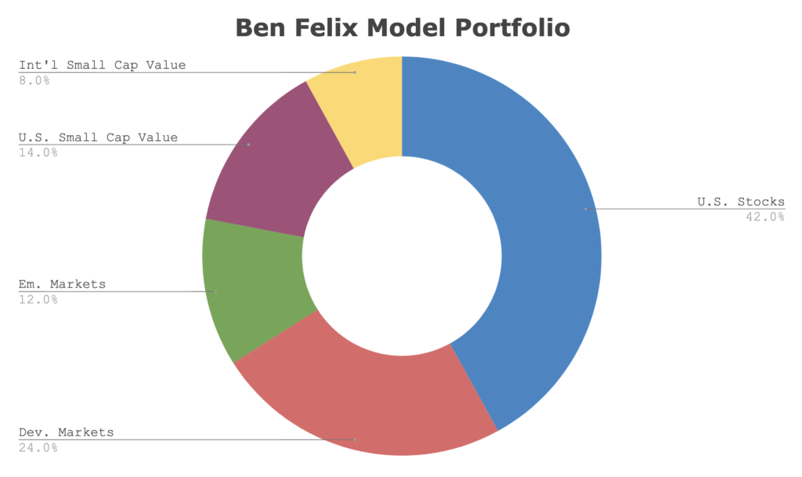
My personal allocation
US large 29%
Global large 24%
US small 14%
Global small 9%
SMH (semis) 10%
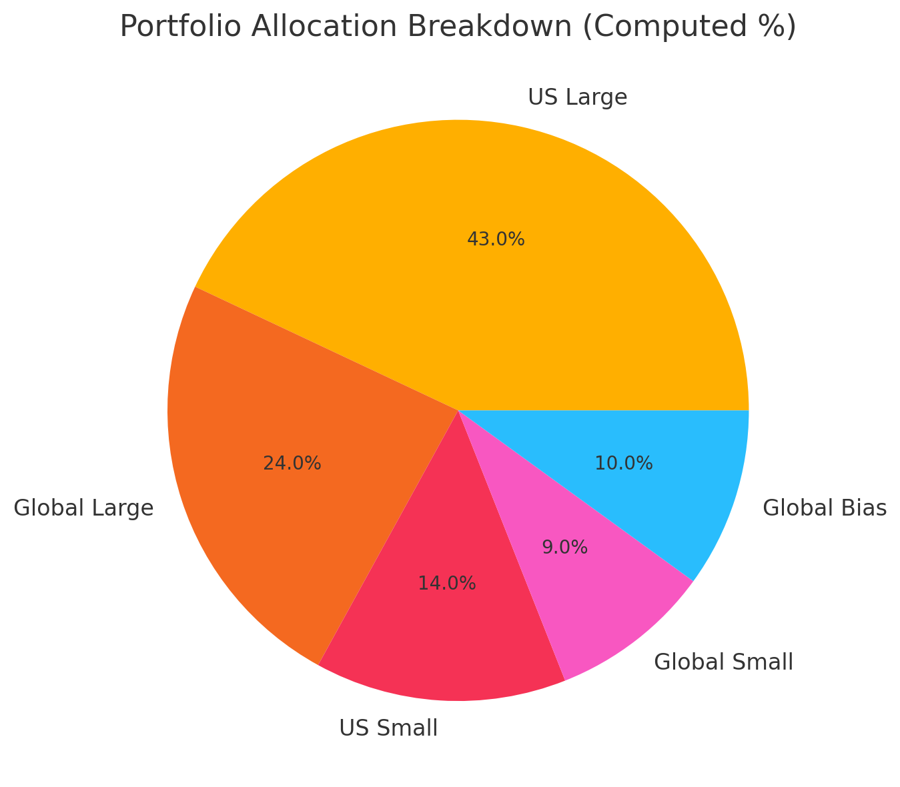
Comparison
Side-by-side of the two allocations.
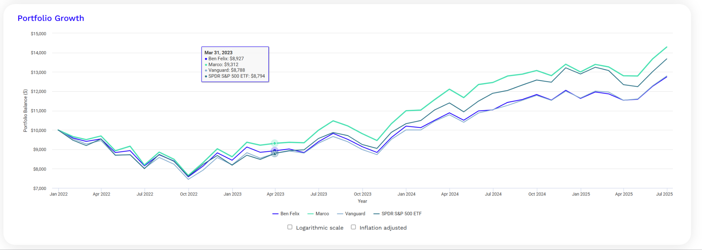
That’s the series.
Three decks: foundations, asset classes, equity allocation. Educational only — not financial advice. Thanks for sitting through it.